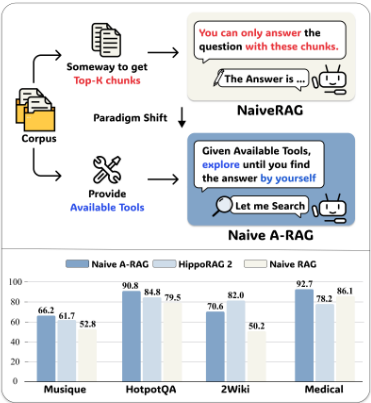
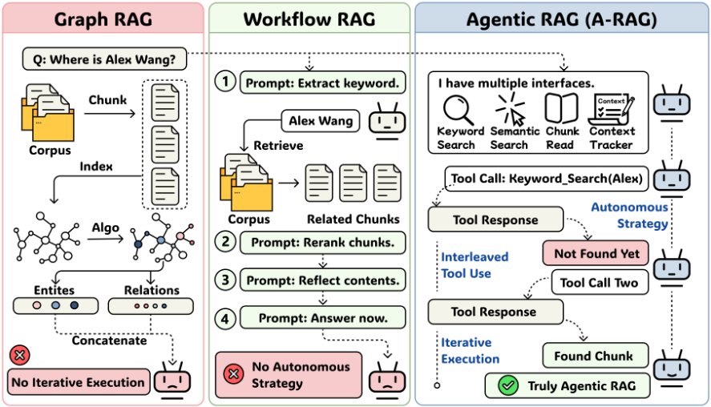
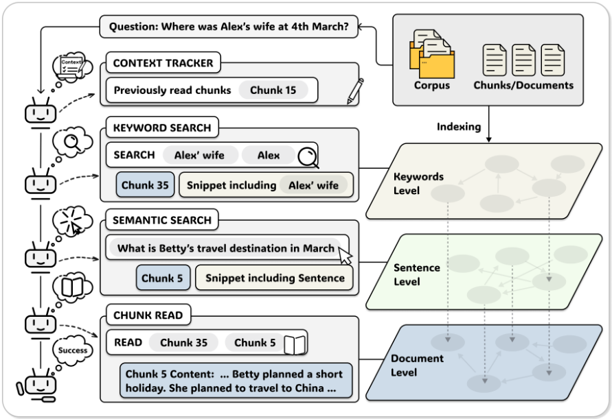
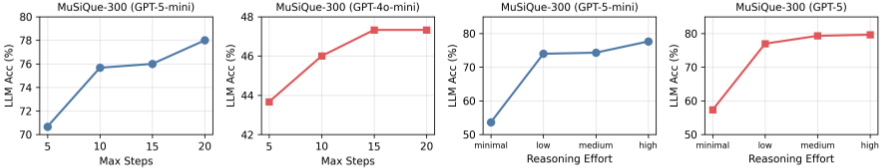
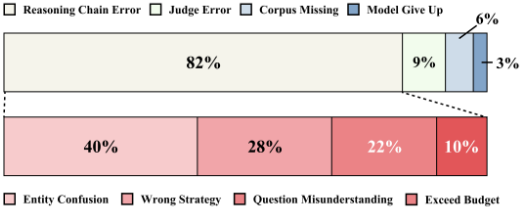

A-RAG：通过分层检索接口扩展 Agentic RAG（检索增强生成）
现有 RAG 系统要么用固定算法一次性检索后把段落拼接进上下文，要么让模型执行预定义工作流，模型始终无法参与检索决策。论文提出 A-RAG，将 keyword_search、semantic_search、chunk_read 三个分层检索工具直接暴露给模型，配合约 1000 token 分块加句级 embedding 的轻量索引与最简 ReAct 式 Agent loop，让模型自主决定检索策略、迭代轮次与作答时机。在 HotpotQA、2WikiMultiHopQA、MuSiQue、GraphRAG-Bench 上，A-RAG (Full) 在 GPT-5-mini 骨干下全面超越 GraphRAG、HippoRAG2、LinearRAG 等 Graph-RAG 与 Workflow RAG 方法，且检索 token 持平或更少；测试时增大步数与 reasoning effort 可持续涨点，reasoning effort 从 minimal 到 high 提升约 25%。失败分析显示瓶颈已从"检索不到"转移到"推理链错误"（MuSiQue 上占 82%）。对团队的核心启示是：为 Agent 设计分层工具接口与按需加载上下文，比设计复杂检索算法或固定工作流更有效。
现有 RAG 方法依赖两种范式：(1) 设计算法（含图结构）一次性检索多个段落并拼接进模型输入；(2) 预定义工作流并提示模型逐步执行。两者都不是真正 agentic 的——模型不能根据具体任务调整策略、选择交互方式或判断证据是否充分，因而无法随模型能力提升而有效扩展（scale）。
构建三层信息表示的分层索引：约 1000 token、按句子边界对齐的 chunk 切分；句级 embedding（Qwen3-Embedding-0.6B）并保留句子到父 chunk 的映射；关键词级不做离线预索引，而在查询时做精确文本匹配，从而避免建知识图谱/倒排索引的开销。在此之上设计三个粒度递进的检索工具：keyword_search（精确词匹配，按词频与词长加权打分，返回含关键词的缩略句片段）、semantic_search（句级向量检索，按父 chunk 聚合，返回匹配句子片段）、chunk_read（按需读取完整 chunk，可读相邻 chunk 补充上下文）。Agent loop 刻意采用最简 ReAct 式设计（串行工具调用、推理与工具调用交替），并用 Context Tracker 记录已读 chunk 集合，重复读取时返回"This chunk has been read before"的零 token 提示，既省成本又引导 Agent 探索语料其他部分。系统提示刻意保持最小化，仅在不同配置间更换可用工具与策略描述。
GPT-4o-mini 骨干下，A-RAG (Full) 在 5 个数据集（HotpotQA、2WikiMultiHopQA、MuSiQue、GraphRAG-Bench 等）中的 3 个取得最佳；换用 GPT-5-mini 后在全部基准上取得最优（LLM-Acc 与 Contain-Acc 双指标）
仅配备单个 embedding 检索工具的 A-RAG (Naive) 即在多个数据集上超越现有 Graph-RAG 与 Workflow RAG 方法，且换用 GPT-5-mini 骨干后优势更明显
Test-Time Scaling（MuSiQue 前 300 题）：max steps 从 5 增至 20，GPT-5-mini 提升约 8%，GPT-4o-mini 仅提升约 4%；reasoning effort 从 minimal 到 high，GPT-5-mini 与 GPT-5 均提升约 25%
上下文效率：A-RAG (Full) 以持平或更少的检索 token 取得更高准确率；A-RAG (Naive) 检索 token 更多但性能更低，验证了分层渐进式信息披露设计的价值
失败模式：Naive RAG 约 50% 失败源于检索局限（找不到文档）；A-RAG 在 MuSiQue 上 82% 的失败为推理链错误，其中实体混淆占 40%（2Wiki 上占 71%），另有 22% 问题误解（MuSiQue）与 33% 模型放弃（2Wiki）
提出判定"真 Agentic"的三原则——Autonomous Strategy、Iterative Execution、Interleaved Tool Use，并论证 A-RAG 是唯一同时满足三者的 RAG 范式：区别于 Graph RAG 的预定义检索算法（GraphRAG、RAPTOR、HippoRAG、LightRAG）和 Workflow RAG 的设计期固定流程（FLARE、IRCoT、RA-ISF、MA-RAG 等），A-RAG 不预设任何工作流，而是把关键词/句子/chunk 三粒度的分层检索接口作为工具交给模型自主编排。核心主张是"未来应设计 agent-friendly 接口而非复杂检索算法"，并用 Context Tracker、片段先行-按需精读等机制控制上下文开销。
相关度级别：high
命中能力域：3.1 上下文工程与记忆 | 3.3 Agent 架构与工具使用 | 3.5 评测与可靠使用
理由：直接命中团队多个核心能力域。3.1：论文本质是 RAG 与上下文管理——分层索引、片段先行/按需精读的渐进式上下文加载、Context Tracker 去重、检索 token 效率分析，都是团队"上下文组织与管理"的直接素材。3.3：核心贡献正是工具/接口设计（三个检索工具的参数与描述设计）与最简 Agent loop（ReAct 式、串行调用、迭代预算），与团队"Agent 架构与工具/技能调用"完全对口，且给出了可复用的工具描述写法。3.5：LLM-Acc/Contain-Acc 双指标评测、test-time compute 与成本效率分析、失败模式人工归类方法，对团队评测保障与可靠使用有直接参考价值。知识库问答是团队明确场景，本文方法可近乎直接迁移。
建议动作：深入精读并做内部分享
arXiv:2602.03442v1 [cs.CL] 3 Feb 2026
2026年2月4日
1
Mingxuan Du 1, Benfeng Xu 2†, Chiwei Zhu 1, Shaohan Wang 1, Pengyu Wang Xiaorui Wang 2, Zhendong Mao 1‡
1 中国科学技术大学，中国合肥 2 Metastone Technology，中国北京 dumingxuan@mail.ustc.edu.cn
前沿语言模型已展现出强大的推理能力和长程工具调用能力。然而，现有的检索增强生成（RAG）系统未能利用这些能力。它们仍然依赖两种范式：（1）设计一种算法，一次性检索出若干段落并将其拼接进模型输入；或（2）预先定义一个工作流，并提示模型逐步执行。这两种范式都不允许模型参与检索决策，从而无法随着模型的改进而高效扩展。在本文中，我们提出了 A-RAG，一个将分层检索接口直接暴露给模型的智能体式 RAG（Agentic RAG）框架。A-RAG 提供三种检索工具：keyword_search、semantic_search 和 chunk_read，使智能体（agent）能够跨多个粒度自适应地搜索和检索信息。在多个开放域问答（QA）基准测试（benchmark）上的实验表明，A-RAG 在检索 token 数量相当或更少的情况下始终优于现有方法，这证明 A-RAG 能够有效利用模型能力，并动态适应不同的 RAG 任务。我们进一步系统地研究了 A-RAG 如何随模型规模和测试时计算量（test-time compute）而扩展。我们将发布代码和评估套件，以促进未来研究。代码和评估套件可在 https://github.com/Ayanami0730/arag 获取。
大语言模型（LLM）的发展已进入一个新阶段，其主要扩展方向正从单轮文本理解与生成转向复杂推理以及多步骤、工具增强的交互（OpenAI, 2025c; Anthropic, 2025b; Google, 2025; DeepSeek-AI et al., 2025; Shao et al., 2025; Yang et al., 2025a; Team et al., 2025; MiniMax AI, 2025）。这一转变显著增强了基于 LLM 的智能体（agent）的能力与实用性，并在编程和深度研究等领域展现出显著进展。通过集成前沿模型，编程 agent（coding agent）（Anysphere, Inc., 2023; Anthropic, 2025a）大幅提升了软件工程师的生产力，而深度研究 agent（deep research agent）（OpenAI, 2025b; Google LLC, 2024; Tongyi DeepResearch Team, 2025）则极大地加速了研究人员开展调研和收集信息的能力。这标志着一次范式转变。然而，检索增强生成（RAG）领域的方法却很少涉及这一转变。
图 1：两种范式的比较与性能结果。现有 RAG 方法主要依赖两种范式：（1）设计一种算法（无论是否采用图结构），一次性检索出多个段落并将它们拼接为模型输入（Yan et al., 2024; Sarthi et al., 2024; Gutiérrez et al., 2025a; Edge et al., 2025; Guo et al., 2025; Qian et al., 2025; Huang et al., 2025）；（2）预先定义一个工作流，并通过多轮迭代提示模型逐步执行该工作流（Jiang et al., 2023; Trivedi et al., 2023; Asai et al., 2023; Liu et al.,
† 项目负责人。
‡ 通讯作者。

预印本。进行中的工作。
2024）。这两种方法都不是真正的 agentic（智能体式）方法，因为模型不被允许根据具体任务调整工作流、选择不同的交互策略，或自行判断何时已收集到足够的证据来给出答案。
如图 1 所示，Naive RAG 与 Naive Agentic RAG 的关键区别在于 agent 的自主性。我们的初步实验表明，即便是最简单的 Naive Agentic RAG——仅配备一个基于嵌入（embedding）的工具来从语料库中检索——也能持续优于 Naive RAG 及以往的基线方法。这一结果展示了 agentic RAG 范式的潜力。
为了解决这些局限性，我们提出了 A-RAG，一个具备层次化检索接口（hierarchical retrieval interfaces）的 Agentic RAG 框架。我们的核心洞察在于：语料库中的信息天然以多种粒度组织，从细粒度的关键词级信号，到更粗粒度的句子级和块级（chunk-level）表示。据此，我们设计了一整套检索工具，使 agent 能够跨这些粒度访问信息。我们观察到，在配备这一层次化工具集后，agent 会自发地泛化出为不同任务量身定制的多样化工作流，从而带来一致的性能提升。
在多个基准测试（benchmark）上开展的全面实验表明，A-RAG 大幅超越了已有方法。此外，我们对测试时扩展（Test-Time Scaling）行为进行了系统研究，结果显示 A-RAG 的性能随计算资源的增加而稳步提升，这表明我们的框架能够随模型能力的进步而高效扩展。综上所述，我们的贡献包括：
我们在图2中比较了三种 RAG 范式：Graph RAG、Workflow RAG 和 Agentic RAG（A-RAG）。我们识别出定义真正智能体自主性的三项原则，并证明 A-RAG 是唯一同时满足这三项原则的范式。附录A中提供了针对现有方法的详细比较。
早期研究表明，检索可以帮助模型引入外部知识，从而更准确地回答问题 (Lewis et al., 2021)。后续工作在此基础上不断改进，包括查询重写 (Chan et al., 2024)、自适应路由策略 (Jeong et al., 2024)、检索质量评估 (Yan et al., 2024) 以及重排序机制。
2024 年，微软提出了 GraphRAG (Edge et al., 2025)，该方法从语料库中构建实体关系图，帮助模型对大规模知识库形成整体性理解。这一方法已迅速发展为一种主流的检索增强生成（RAG）范式，研究者们通过在知识图谱结构设计、语义单元定义和检索策略方面的创新不断推进该领域的前沿 (Guo et al., 2025; Shen et al., 2025; Yang et al., 2025b; Song et al., 2025b)。其中，RAPTOR (Sarthi et al., 2024) 通过递归摘要构建层次化树结构，以实现多层级检索。LightRAG (Guo et al., 2025) 将知识图谱与向量检索相结合，同时支持局部与全局搜索。HippoRAG (Gutiérrez et al., 2025a,b) 模仿海马体的记忆索引机制，利用 Personalized PageRank 实现高效的多跳推理。尽管这些方法融入了更丰富的结构，它们仍然依赖预定义的检索算法，而非由模型驱动的决策。如果初始检索到的上下文不够充分，模型便无法利用其推理能力迭代地获取更全面、更准确的信息。
随着基于 LLM 的智能体的出现，许多工作探索了智能体式（agentic）的 RAG 方法。然而，大多数方法依赖于预定义的智能体工作流，通过提示让模型逐步执行固定流程。因此我们将这类方法称为 Workflow RAG。还有一些方法进一步采用监督微调（SFT）和强化学习（RL），以帮助模型更稳健地遵循这些工作流。在免训练的方法中，FLARE (Jiang et al., 2023) 在生成置信度下降时触发检索，IRCoT (Trivedi et al., 2023) 将思维链（CoT）推理与检索步骤交错进行，而 RA-ISF (Liu et al., 2024)
2

通过迭代自反馈来分解复杂查询。多智能体方法进一步扩展了这一范式：MA-RAG (Nguyen et al., 2025) 通过协作式思维链协调多个专职智能体，RAGentA (Besrour et al., 2025; Chang et al., 2024) 将混合检索与引用追踪相结合以完成问答任务。基于训练的方法已经证明，即使是更小的模型也能学习到有效的检索策略 (Asai et al., 2023; Chan et al., 2024; Chen et al., 2025; Xiong et al., 2025; Jin et al., 2025; Song et al., 2025a; Luo et al., 2025)。尽管这些工作流设计精巧，但它们在设计时便已固定：模型无法根据任务特性调整自身策略。相比之下，我们证明，借助对智能体友好的分层检索接口，模型无需任何预定义工作流即可自主采用多样化的交互策略，并在不同任务复杂度下展现出更强、更稳健的性能。
在本节中，我们提出 A-RAG，一个向模型暴露分层检索接口的智能体式 RAG 框架。如图 3 所示，我们的方法由三个关键组件构成：(i) 分层索引；(ii) 一套检索工具；以及 (iii) 一个简单的智能体循环设计，用以清晰地展示 A-RAG 的有效性。
为了实现高效的多粒度检索，我们构建了一个分层索引，用以在不同抽象层次上组织语料库信息。我们的索引构建流程十分轻量，仅包含两个阶段：分块与嵌入。
分块。遵循 LinearRAG（Zhuang et al., 2025）的设置，我们将语料库划分为每块约 1,000 个 token 的文本块，并确保块边界与句子边界对齐，以保持语义连贯性。每个文本块都作为一个自包含的语义单元，智能体可以通过专用的检索接口选择性地访问，而不是像传统 RAG 方法那样不加区分地将其拼接进上下文中。
嵌入。对于每个文本块 c_i，我们使用基于规则的句子切分将其分解为句子 {s_{i,1}, s_{i,2}, ..., s_{i,n_i}}。随后，我们使用预训练的句子编码器 f_emb 计算稠密向量表示：v_{i,j} = f_emb(s_{i,j})。这种句子级嵌入在支持细粒度语义匹配的同时，还维护了从句子回溯到其父文本块的映射，使智能体能够先识别相关句子，再阅读完整的文本块上下文。
3

关键词级。对于关键词级信息，我们避免预先索引。我们不在离线阶段构建倒排索引或知识图谱，而是在查询时直接执行精确文本匹配。与基于图的方法相比，这一设计选择显著降低了索引时间和计算成本。通过这一轻量级的索引流程，我们获得了一种三级信息表示：用于通过运行时文本搜索实现精确实体匹配的隐式关键词级信息、用于语义搜索的句子级嵌入，以及用于完整内容访问的块级存储，它们共同支撑了分层检索接口。
我们设计了三种在不同粒度上运行的检索工具，使 Agent 能够根据每个问题的特征自适应地选择最合适的搜索策略。
关键词搜索（Keyword Search）。该工具执行精确的词法匹配，以定位包含特定词条的块。Agent 提供一个关键词列表 K = { k 1 , k 2 , . . . , k m } 和一个用于指定返回结果数量的参数 k。块 c i 的相关性得分计算如下：
其中 count ( k, T i ) 表示关键词 k 在块文本 T i 中出现的频率，| k | 为关键词的字符长度（较长的关键词通常更为具体，因此被赋予更高的权重）。对于每个匹配的块，我们通过提取至少包含一个关键词的句子来构建精简的片段（snippet）：
其中 Sent ( c i ) 表示块 c i 中的句子集合。该工具返回 topk 个块的 ID 及其对应的片段，使 Agent 能够自主决定下一步动作。
4
语义搜索（Semantic Search）。该工具使用稠密检索（dense retrieval）来查找语义相似的段落。给定自然语言查询 q，我们将其编码为查询嵌入 v q = f emb ( q )，并计算其与所有句子嵌入之间的余弦相似度：
我们检索排名靠前的句子，并按其所属的父块进行聚合。每个块的相关性得分由其得分最高的句子决定。该工具返回 topk 个块的 ID，并将每个块内匹配到的句子作为片段一并返回，使 Agent 能够自主决定下一步动作。
块读取（Chunk Read）。基于关键词搜索和语义搜索返回的片段，Agent 可以判断哪些块需要完整阅读，并使用该工具访问其完整内容。Agent 还可以在需要时读取相邻的块，以收集额外的上下文。
这种分层设计本质上对 Agent 友好，使 Agent 能够根据自身判断以不同粒度访问语料库信息。Agent 无需不加区分地加载大量上下文，而是可以按需增量地检索信息，在最小化上下文开销的同时，保留了在需要时收集全面证据的灵活性。
由于我们的方法主要聚焦于接口设计以及对 A-RAG 中测试时扩展（test-time scaling）行为的研究，我们刻意采用最简单的 Agent Loop 骨干，以尽量减少来自复杂编排机制的混淆因素。
Agent Loop。我们采用类 ReAct 的框架（Yao et al., 2023），其中模型以交错的方式迭代地执行推理与工具调用。在每一次迭代中，Agent 选择一个要调用的工具，观察结果，并决定下一步动作。我们有意避免并行工具调用以及其他复杂的设计，以便清晰地观察不同接口配置如何影响 Agent 行为。当达到最大迭代预算仍未产生答案时，我们会提示 Agent 基于迄今为止收集到的信息综合生成一个回复。
Context Tracker。为了防止冗余的信息检索和不必要的 token 消耗，我们维护一个上下文跟踪器，用于记录在检索过程中哪些块已被读取。具体而言，我们跟踪一个集合 C read = { c i 1 , c i 2 , . . . , c i k } ，其中每个 c i j 表示先前已访问过的某个块的 ID。当 Agent 尝试读取某个块 c i ∈ C read 时，chunk read 工具不会再次返回完整文本，而是返回一条通知消息 'This chunk has been read before'，且不消耗任何额外的 token。这一机制不仅降低了计算成本，还鼓励 Agent 探索语料库的不同部分，而不是反复查看相同的段落。
这种简单直接的设计使我们能够清晰地隔离并分析分层接口对 Agent 行为和检索性能的影响。
在本节中，我们进行了全面的实验，以评估 A-RAG 在多个基准测试上的有效性，并分析其测试时扩展（test-time scaling）行为。
数据集。我们在四个广泛使用的多跳问答（multi-hop QA）数据集上评估 A-RAG：HotpotQA (Yang et al., 2018)、2WikiMultiHopQA (Ho et al., 2020)、MuSiQue (Trivedi et al., 2022) 以及 GraphRAG-Bench (Xiang et al., 2025)。遵循 LinearRAG (Zhuang et al., 2025) 的实验设置，我们使用相同的语料库和问题，以确保不同方法之间的公平比较。
基线。我们将所有对比方法分为两组：(i) 朴素基线（Vanilla Baselines）：包括直接的零样本大语言模型（LLM）推理和朴素检索增强生成（Naive RAG）方法；(ii) 图 RAG 与工作流 RAG（Graph-RAG and Workflow RAG）：我们与代表性的图增强方法进行基准测试对比，包括 GraphRAG (Edge et al., 2025)、HippoRAG2 (Gutiérrez et al., 2025a) 和 LinearRAG (Zhuang et al., 2025)，以及基于工作流的方法，包括 FaithfulRAG (Zhang et al., 2025a)、MA-RAG (Nguyen et al., 2025) 和 RAGentA (Besrour et al., 2025; Chang et al., 2024)。我们将这些基线与我们仅配备单个嵌入检索工具的 A-RAG (Naive) 以及 A-RAG (Full) 进行比较。
5
| Method.Method | MuSiQue.LLM | MuSiQue.Cont | HotpotQA.LLM | HotpotQA.Cont | 2Wiki.LLM | 2Wiki.Cont | Med..LLM | Novel.LLM |
|---|---|---|---|---|---|---|---|---|
| GPT-4o-mini | GPT-4o-mini | GPT-4o-mini | GPT-4o-mini | GPT-4o-mini | GPT-4o-mini | GPT-4o-mini | GPT-4o-mini | GPT-4o-mini |
| Vanilla Baselines | Vanilla Baselines | Vanilla Baselines | Vanilla Baselines | Vanilla Baselines | Vanilla Baselines | Vanilla Baselines | Vanilla Baselines | Vanilla Baselines |
| Direct Answer | 18.3 | 13.9 | 45.4 | 40.7 | 30.3 | 49.7 | 68.6 | 45.3 |
| Naive RAG | 38.6 | 36.1 | 74.5 | 72.9 | 42.6 | 59.0 | 75.3 | 68.5 |
| Graph-RAG and Workflow RAG | Graph-RAG and Workflow RAG | Graph-RAG and Workflow RAG | Graph-RAG and Workflow RAG | Graph-RAG and Workflow RAG | Graph-RAG and Workflow RAG | Graph-RAG and Workflow RAG | Graph-RAG and Workflow RAG | Graph-RAG and Workflow RAG |
| GraphRAG | 26.4 | 20.8 | 33.2 | 33.3 | 18.4 | 47.2 | 51.3 | 28.8 |
| HippoRAG2 | 40.6 | 38.4 | 80.7 | 69.7 | 64.7 | 68.5 | 72.0 | 70.1 |
| LinearRAG | 34.8 | 26.3 | 72.0 | 60.5 | 62.9 | 62.3 | 53.1 | 45.4 |
| FaithfulRAG | 28.8 | 22.6 | 60.5 | 52.5 | 38.8 | 38.1 | 42.5 | 33.3 |
| MA-RAG | 34.1 | 27.4 | 60.6 | 54.4 | 51.0 | 53.4 | 62.3 | 44.5 |
| RAGentA | 32.2 | 29.9 | 63.0 | 62.4 | 27.7 | 50.3 | 67.7 | 61.3 |
| A-RAG (Ours) | A-RAG (Ours) | A-RAG (Ours) | A-RAG (Ours) | A-RAG (Ours) | A-RAG (Ours) | A-RAG (Ours) | A-RAG (Ours) | A-RAG (Ours) |
| A-RAG (Naive) | 43.8 | 38.5 | 76.6 | 70.7 | 52.3 | 62.4 | 79.0 | 70.0 |
| A-RAG (Full) | 46.1 | 39.6 | 77.1 | 74.0 | 60.2 | 63.7 | 79.4 | 72.7 |
| GPT-5-mini | GPT-5-mini | GPT-5-mini | GPT-5-mini | GPT-5-mini | GPT-5-mini | GPT-5-mini | GPT-5-mini | GPT-5-mini |
| Vanilla Baselines | Vanilla Baselines | Vanilla Baselines | Vanilla Baselines | Vanilla Baselines | Vanilla Baselines | Vanilla Baselines | Vanilla Baselines | Vanilla Baselines |
| Direct Answer | 35.8 | 26.5 | 63.6 | 53.5 | 51.3 | 54.0 | 90.5 | 45.1 |
| Naive RAG | 52.8 | 48.7 | 81.2 | 79.5 | 50.2 | 66.5 | 86.1 | 70.6 |
| Graph-RAG and Workflow RAG | Graph-RAG and Workflow RAG | Graph-RAG and Workflow RAG | Graph-RAG and Workflow RAG | Graph-RAG and Workflow RAG | Graph-RAG and Workflow RAG | Graph-RAG and Workflow RAG | Graph-RAG and Workflow RAG | Graph-RAG and Workflow RAG |
| GraphRAG | 48.3 | 39.1 | 82.5 | 74.9 | 66.5 | 70.7 | 87.3 | 77.1 |
| HippoRAG2 | 61.7 | 52.5 | 84.8 | 75.0 | 82.0 | 79.7 | 78.2 | 54.3 |
| LinearRAG | 62.4 | 51.8 | 86.2 | 77.6 | 87.2 | 84.8 | 79.2 | 54.7 |
| FaithfulRAG | 52.9 | 52.8 | 76.9 | 75.3 | 51.8 | 56.6 | 75.4 | 60.7 |
| MA-RAG | 40.0 | 31.6 | 67.1 | 57.9 | 54.7 | 54.3 | 68.3 | 45.1 |
| RAGentA | 38.3 | 37.4 | 61.2 | 65.0 | 24.0 | 53.5 | 73.7 | 60.2 |
| A-RAG (Ours) | A-RAG (Ours) | A-RAG (Ours) | A-RAG (Ours) | A-RAG (Ours) | A-RAG (Ours) | A-RAG (Ours) | A-RAG (Ours) | A-RAG (Ours) |
| A-RAG (Naive) | 66.2 | 59.7 | 90.8 | 85.3 | 70.6 | 76.9 | 92.7 | 80.4 |
| A-RAG (Full) | 74.1 | 65.3 | 94.5 | 88.0 | 89.7 | 88.9 | 93.1 | 85.3 |
| Method.Method | MuSiQue.LLM | MuSiQue.Cont | HotpotQA.LLM | HotpotQA.Cont | 2Wiki.LLM | 2Wiki.Cont | Med..LLM | Novel.LLM |
评估指标。遵循 LinearRAG，我们采用两个指标进行端到端 QA 评估：(1) LLM 评估准确率（LLM-Acc，对应 LinearRAG 中的 GPT-Acc），这是一种基于 LLM 的指标，用于判定预测结果与真实答案之间的语义等价性；(2) 包含匹配准确率（Contain-Acc），用于验证真实答案是否出现在生成的回答中。对于采用简短式答案的 HotpotQA、2WikiMultiHopQA 和 MuSiQue，我们报告这两个指标。对于采用长篇描述性答案的 GraphRAG-Bench，我们仅报告 LLM-Acc，因为冗长的真实答案很少逐字出现在生成的回答中，使得 Contain-Acc 不具参考价值。
实现。我们使用 GPT-4o-mini 和 GPT-5-mini (OpenAI, 2025a) 两者作为骨干 LLM 来评估所有方法。在稠密检索方面，除 LinearRAG 外的所有方法均使用 Qwen3-Embedding-0.6B (Zhang et al., 2025b)，并以 k = 5 获取 top-k 结果；LinearRAG 则使用其原始嵌入模型，因为其命名实体识别（NER）模块与 Qwen3-Embedding 不兼容。我们有意同时纳入较早的模型与前沿推理模型，以全面呈现 RAG 方法在不同能力水平上的表现。在基于 LLM 的评估中，我们使用 GPT-5-mini 作为评判模型（judge）；基于我们的人工验证，它表现出更高的准确性与稳定性。详细的配置与超参数在附录 B 中给出。
6
| Method. | MuSiQue.LLM | MuSiQue.Cont | HotpotQA.LLM | HotpotQA.Cont | 2Wiki.LLM | 2Wiki.Cont | Med..LLM | Novel.LLM |
|---|---|---|---|---|---|---|---|---|
| A-RAG (Full) | 74.1 | 65.3 | 94.5 | 88 | 89.7 | 88.9 | 93.1 | 85.3 |
| w/o KWSearch | 72.6 | 65.3 | 93 | 87.4 | 88.9 | 88.1 | 93.2 | 85 |
| w/o Semantic | 69.4 | 63.3 | 93.9 | 88.4 | 89.1 | 88 | 92.1 | 85.2 |
| w/o Chunk Read | 73.6 | 67 | 93.6 | 88.8 | 89 | 87.9 | 93.3 | 85.1 |
| Method. | MuSiQue.LLM | MuSiQue.Cont | HotpotQA.LLM | HotpotQA.Cont | 2Wiki.LLM | 2Wiki.Cont | Med..LLM | Novel.LLM |
表 1 展示了在所有基准测试（benchmark）上的主要实验结果。我们从实验中提炼出以下三项关键观察：
原始检索方法（vanilla retrieval method）仍是稳健的基线。在我们以 GPT-5-mini 作为评判模型、使用 Qwen3-Embedding 进行稠密检索的统一评估设置下，vanilla 基线在 GPT-4o-mini 和 GPT-5-mini 两种骨干模型上均展现出稳健的性能。现有的 Graph-RAG 与 Workflow RAG 方法未能在所有数据集上稳定地超越这些简单基线。
Naive A-RAG 为智能体式 RAG（agentic RAG）确立了新的强基线。作为仅配备单一基于嵌入的检索工具的简化变体，A-RAG (Naive) 在多个数据集上超越了现有的 Graph-RAG 与 Workflow RAG 方法，展现了智能体范式的固有优势。当切换为 GPT-5-mini 作为骨干模型时，这一优势变得更加显著。该结果表明，即使没有复杂的多粒度工具，赋予模型在检索决策上更大的自主性，也比依赖固定的检索算法能带来更好的性能。
A-RAG 通过分层检索接口超越了现有 RAG 方法。A-RAG 是为具备工具调用（tool use）能力的推理模型而设计的，契合 LLM 领域当前的发展趋势。以 GPT-4o-mini 为骨干模型时，A-RAG (Full) 在 5 个数据集中的 3 个上取得了最佳性能。当切换到具备更强推理与工具调用能力的 GPT-5-mini 时，A-RAG (Full) 在所有 benchmark 上均取得了更优的结果。A-RAG 相对于各基线方法以及 Naive A-RAG 的一致提升表明，A-RAG 框架对 Agent 是友好的。它使模型能够利用自身的推理能力，根据任务需求动态调整策略并编排不同的接口，从而取得更好的性能。
为了探究各个检索工具的贡献，我们通过从 A-RAG (Full) 中系统地移除单个组件来进行消融实验。我们评估了三种消融变体：(i) w/o Keyword Search 和 w/o Semantic Search，即直接从 Agent 的工具集中移除相应的检索工具；(ii) w/o Chunk Read，即用完整的 chunk 文本替代关键词检索和语义检索基于片段的响应，并完全移除 chunk read 工具。
如表 2 所示，完整的分层配置取得了最优的整体性能。A-RAG (Full) 在大多数 benchmark 上始终取得最佳结果。移除语义检索或关键词检索中的任何一个都会导致性能下降，这凸显了多粒度信息对多跳检索任务的重要性。w/o Chunk Read 相比 A-RAG (Full) 的较差表现表明，我们的渐进式信息获取设计使 Agent 能够进行自主判断并精确读取最相关的内容。这一设计不仅增强了 Agent 的自主性，还使模型能够有选择地仅完整读取最相关的 chunk，从而避免无关内容引入的噪声。
为了理解 A-RAG 作为一种新范式的优势与特性，我们在本节中进行了进一步的实验与分析。
由于 A-RAG 赋予大语言模型（LLM）在检索决策方面更大的自主性，在测试时增加计算资源可以进一步扩展该框架的性能。如图 4 所示，我们在 MuSiQue 的前 300 个任务上进行了实验，发现增加 max-step 和 reasoning effort 均能有效扩展模型性能。当将步数从 5 扩展到 20 时，GPT-5-mini 提升了约 8%，而 GPT-4o-mini 仅提升约 4%，这表明更强的推理模型更有能力胜任更长程的探索。当将 reasoning effort 从 minimal 提升到 high 时，GPT-5-mini 和 GPT-5 均取得了约 25% 的大幅提升。这些结果表明，A-RAG 能够有效利用测试时算力，使其有望成为未来发展的一个前景广阔的范式。
7

上下文效率对于将 RAG 集成到复杂智能体系统中至关重要。我们分析了从语料库中检索到的 token，以衡量每种方法利用上下文的效率（表 3）。
| Method | MuSi. | Hotpot. | 2Wiki | Med. | Novel |
|---|---|---|---|---|---|
| Naive RAG | 5,387 | 5,358 | 5,506 | 5,418 | 4,997 |
| HippoRAG2 | 5,411 | 5,380 | 5,538 | 5,447 | 5,019 |
| GraphRAG | 9,234 | 8,744 | 4,201 | 9,391 | 9,318 |
| LinearRAG | 5,418 | 5,353 | 5,518 | 5,427 | 4,998 |
| FaithfulRAG | 5,342 | 5,310 | 5,419 | 5,410 | 4,994 |
| MA-RAG | 9,566 | 8,007 | 8,857 | 6,858 | 6,101 |
| A-RAG (Naive) | 56,360 | 27,455 | 45,406 | 23,657 | 22,391 |
| A-RAG (Full) | 5,663 | 2,737 | 2,930 | 7,678 | 6,087 |
| Method | MuSi. | Hotpot. | 2Wiki | Med. | Novel |
A-RAG 以更高的上下文效率取得了更优的准确率。与“检索内容越多性能越好”的直觉相反，A-RAG (Full) 检索的 token 数量与传统 RAG 方法相当甚至更少，却取得了更优的准确率。
分层接口是上下文效率的关键。对比 A-RAG (Naive) 与 A-RAG (Full) 揭示出一个显著的模式：ARAG (Naive) 检索的 token 数量多于 ARAG (Full)，但性能却更低。这验证了我们的分层接口设计——渐进式的信息披露在赋予模型更大自主性的同时，避免了无关内容。
我们人工审查了 A-RAG 在 MuSiQue 上的前 100 个错误案例，并将其归类为两级错误类型（图 5）。大多数失败源于推理

链错误。其中，实体混淆最为常见，另有相当一部分归因于错误的检索策略和对问题的误解。各类别的详细定义以及其他数据集上的分析见附录 D。
8
在本工作中，我们将智能体式 RAG（agentic RAG）视为检索增强生成（RAG）领域的一次根本性范式转变。我们提出了 A-RAG，这是一个具备分层检索接口的智能体式 RAG 框架，使大语言模型（LLM）能够自主地以关键词、句子和分块（chunk）层级访问语料库信息。大量实验表明，A-RAG 在多样化的基准测试（benchmark）上始终优于现有的 Graph-RAG 和 Workflow RAG 方法，同时我们的分析验证了其高效的测试时扩展（test-time scaling）行为。我们的研究结果表明，未来的研究应聚焦于设计对智能体友好的接口，而非复杂的检索算法，并探索语言模型与外部知识源之间新的交互范式。
我们的工作主要旨在突出从传统 RAG 到智能体化 RAG（agentic RAG）的范式转变，并证明分层接口是一种有前景的扩展方向。然而，我们并未穷举所有可能的工具设计，也未系统性地比较不同的工具子集及其对智能体行为的影响。针对多样化的工具配置开展全面的消融实验，能够为最优接口设计提供更深入的见解，我们将此留作未来工作。
受计算资源所限，我们尚未在 GPT-5 和 Gemini-3 等更大、更强大的模型上验证该框架。鉴于 A-RAG 是专为具备强大工具调用能力的推理模型而设计的，我们预计在这些前沿模型上性能提升将更为显著，但相关的实证验证仍有待开展。
此外，虽然我们在多跳问答（multi-hop QA）基准测试上取得了强劲的结果，但 A-RAG 向事实核查、对话系统和长文本生成等其他知识密集型任务的泛化能力值得进一步研究。
本文使用的所有数据集均为公开可用的基准测试，这些数据集此前已由先前的研究在适当考虑伦理问题的前提下进行了整理和处理。我们的工作聚焦于改进大语言模型中检索增强生成的基础研究，既不涉及新数据的收集，也不涉及人类受试者。作为对 RAG 系统的一项方法学贡献，我们的方法除底层语言模型固有的伦理风险之外，并未引入额外的伦理风险。
9
我们确定了三项关键原则，用于判断一个检索增强生成（RAG）方法是否真正具备智能体（agentic）特性：（1）自主策略（Autonomous Strategy）：该方法是否允许大语言模型（LLM）动态地选择和组织高层策略（例如，是否/何时/如何检索、分解、验证、重新规划），而不被约束于单一预先指定的工作流，也不主要由外部规则/分类器/评估器来决定。（2）迭代执行（Iterative Execution）：该方法是否支持多轮执行，并能根据中间结果调整执行轮数，而非严格的一次性（one-shot）执行。（3）交错式工具调用（Interleaved Tool Use）：该方法是否遵循类似 ReAct 的动作 → 观察 → 推理循环，其中每次工具调用都以先前工具输出的观察结果为条件，而不是采用始终按相同顺序执行的固定工具链。
表 4 从这三个维度对现有 RAG 方法进行了比较。如表所示，虽然现有方法可能部分满足其中一项或两项原则，但 A-RAG 是唯一完全满足全部三项原则的方法，这使其成为一个真正具备智能体特性的 RAG 框架。
| Method | Auto. | Iter. | Interl. |
|---|---|---|---|
| Naive RAG | ✗ | ✗ | ✗ |
| Self-RAG | ✗ | ✓ | ✓ |
| CRAG | ✗ | ✗ | ✗ |
| Adaptive-RAG | ✗ | ∆ | ∆ |
| FLARE | ✗ | ∆ | ∆ |
| IRCoT | ✗ | ✓ | ∆ |
| RQ-RAG | ✗ | ✗ | ✗ |
| RA-ISF | ✗ | ∆ | ∆ |
| RAPTOR | ✗ | ✗ | ✗ |
| GraphRAG | ✗ | ✗ | ✗ |
| LightRAG | ✗ | ✗ | ✗ |
| MemoRAG | ✗ | ✗ | ✗ |
| HippoRAG2 | ✗ | ✗ | ✗ |
| LinearRAG | ✗ | ✗ | ✗ |
| FaithfulRAG | ✗ | ✗ | ✗ |
| MA-RAG | ∆ | ✓ | ∆ |
| RAGentA | ∆ | ✓ | ∆ |
| A-RAG (Ours) | ✓ | ✓ | ✓ |
| Method | Auto. | Iter. | Interl. |
所有基线结果均在统一的评估设置下于本地复现。所有方法均使用 topk = 5 进行检索，并设置 max_tokens ≥ 16384 以防止推理过程被截断。下面我们简要描述每种基线方法：
13
表 5 总结了每种方法的关键复现配置。
| Method | Configuration |
|---|---|
| GraphRAG | Local Search; chunk_size=1200; top_k_entities=10; Qwen3-Embedding-0.6B. |
| HippoRAG2 | graph_type=facts_and_sim_passage_node; retrieval_top_k=200; qa_top_k=5. |
| LinearRAG | Official configs; all-mpnet-base-v2. |
| FaithfulRAG | 3-step Fact Mining; chunk_topk=5; Qwen3-Embedding-0.6B. |
| MA-RAG | Plan Agent + Plan Executor; numpy cosine similarity. |
| RAGentA | 4-Agent; alpha=0.65; Qwen3-Embedding + FAISS; BM25. |
| Method | Configuration |
输入：问题 q、工具 T、LLM M、最大迭代次数 L
1: M_msg ← [{q}], C_read ← ∅
2: for ℓ = 1 to L do
3: response ← M(M_msg, T)
4: if response 包含工具调用 (t, args) then
5: M_msg.append(response)
6: result ← t.execute(C, args)
7: M_msg.append(result)
8: if t = chunk_read then
9: C_read ← C_read ∪ args.chunk_ids
10: end if
11: else
12: return response
13: end if
14: end for
15: M_msg.append(['Answer the question'])
16: return M(M_msg)
算法 1 给出了 A-RAG Agent 循环的伪代码。该 Agent 维护一个消息历史 M_msg 和一个已读取文本块集合 C_read，用于跟踪上下文。在每次迭代中，LLM M 接收消息历史和可用工具 T，然后决定是调用工具还是返回最终答案。如果调用了工具，则结果会被追加到消息历史中。该循环持续进行，直到 Agent 产生答案或达到最大迭代次数上限 L，此时会向其发出提示，使其综合生成一个回复。
为了理解失效模式如何随着从 Naive RAG 到 Agentic RAG 的范式转变而变化，我们人工分析了两种设置下各自的前 100 个错误案例：(1) 在 HotpotQA 和 MuSiQue 上使用 Naive RAG 的 GPT-4o-mini，以及 (2) 在 MuSiQue 和 2WikiMultiHopQA 上使用 A-RAG 的 GPT-5-mini。该分析旨在为未来研究识别优化机会。
对于使用 GPT-4o-mini 的 Naive RAG，我们定义了以下失效模式：
14
| Failure Mode | HotpotQA | MuSiQue |
|---|---|---|
| Model Understanding | 36% | 35% |
| Multi-hop Retrieval | 27% | 36% |
| Judge Error | 23% | 14% |
| Top-K Insufficient | 13% | 15% |
| Gold Answer Error | 1% | 0% |
| Failure Mode | HotpotQA | MuSiQue |
对于使用 GPT-5-mini 的 A-RAG，我们定义了一个两级分类体系：
| Failure Mode | MuSiQue | 2Wiki |
|---|---|---|
| Reasoning Chain Error | 82% | 45% |
| Model Gave Up | 3% | 33% |
| Judge Error | 9% | 19% |
| Corpus Missing | 6% | 3% |
| Failure Mode | MuSiQue | 2Wiki |
| Failure Mode | MuSiQue | 2Wiki |
|---|---|---|
| Entity Confusion | 40% | 71% |
| Wrong Strategy | 28% | 29% |
| Question Misunderstanding | 22% | 0% |
| Exceed Budget | 10% | 0% |
| Failure Mode | MuSiQue | 2Wiki |
15
范式转变改变了瓶颈所在。对于朴素 RAG 而言，约 50% 的失败源于检索局限（多跳检索 + top-k 不足），表明其核心问题是“无法找到文档”。相比之下，A-RAG 的主要失败模式（在 MuSiQue 上占 82%）是推理链错误，瓶颈由此转移到“找到了文档但推理错误”。
实体混淆是首要挑战。在两个数据集上，实体混淆均为最大的次要失败模式（MuSiQue 上为 40%，2Wiki 上为 71%），这表明提升模型从检索到的上下文中进行消歧并提取正确实体的能力是一个关键的优化方向。
数据集特性影响失败模式。MuSiQue 因其复杂的多跳问题结构而表现出 22% 的问题理解错误，而 2Wiki 则有 33% 的模型放弃情况，这表明针对不同任务类型需要不同的优化优先级。
你是一个乐于助人的助手。请根据所提供的上下文回答问题。
[上下文] {retrieved_chunks}
[问题] {question}
请根据上述上下文给出直接答案。
你是一个问答助手，可以通过可用的工具访问文档语料库。你的目标是通过查找并分析所提供文档中的相关信息来准确回答问题。[可用工具] - naive_embedding_search：按嵌入相似度返回 top-k 个文本块 - chunk_read：读取特定文本块的完整内容 [策略] 以迭代方式工作：检索 -> 读取 -> 回答。
[回答时] - 回答应以检索到的文档为依据 - 引用支持你回答的具体文本块 - 提供有证据支持的清晰、直接的答案 - 避免超出文档所支持范围的推测
你是一个问答助手，可以通过可用工具访问文档语料库。你的目标是通过查找和分析所提供文档中的相关信息来准确回答问题。
[可用工具] - keyword_search：通过精确关键词匹配查找文本块 - semantic_search：通过语义相似度查找文本块 - chunk_read：读取特定文本块的完整内容 [策略] 以迭代方式工作：搜索 -> 读取 -> 评估 -> 搜索 -> 读取 -> ... -> 回答。对于多跳问题，将问题分解，逐步解决每个子问题。
[回答时] - 回答应以检索到的文档为依据 - 引用支持你回答的具体文本块 - 提供有证据支持的清晰、直接的答案 - 避免超出文档所支持范围的推测
图 6：不同 RAG 配置的系统提示词。上：Naive RAG 直接给出答案，不使用工具调用。中：Naive A-RAG，配备单一嵌入工具。下：A-RAG (Full)，配备分层检索工具。
16
我们刻意使用极简的系统提示词，以展示 Agentic RAG 范式的简洁性与有效性。如图 6 所示，所有配置共享相同的基本指令结构，仅在可用工具和策略描述上有所不同。提供给 Agent 的完整工具描述如图 7 和图 8 所示。
通过嵌入相似度返回 top-k 个文本块（不使用关键词/BM25）。参数：
- query（字符串）：用于搜索相关文本块的用户问题
- top_k（整数）：返回的文本块数量（默认值：5）
使用基于关键词的精确文本匹配（不区分大小写）搜索文档文本块。返回文本块 ID 以及关键词出现位置的缩略句子片段。重要提示：该工具在文本中按字面匹配关键词。请使用简短、具体的词语（最多 1-3 个单词）。每个关键词独立进行匹配。优质关键词示例：
- 实体名称："Albert Einstein"、"Tesla"、"Python"、"Argentina"
- 技术术语："photosynthesis"、"quantum mechanics"
- 关键概念："climate change"、"GDP growth"
劣质关键词示例（切勿使用）：
- 长短语："the person who invented the telephone" -> 应改用 "Alexander Bell"
- 问句："when did World War 2 start" -> 应改用 "World War 2"、"1939"
- 描述性语句："the country between France and Spain" -> 应改用 "Andorra"
- 完整句子："how does the stock market work" -> 应改用 "stock market"、"trading"
返回值：以 "..." 标记的缩略片段，显示关键词出现的位置。这些片段可帮助你确定相关文本块，但回答问题时必须使用 chunk_read 获取完整文本。
参数：
- keywords（字符串数组）：要搜索的关键词列表。每个关键词最多 1-3 个单词（例如 ['Einstein', 'relativity theory', '1905']）。
- top_k（整数）：返回的排名最靠前的文本块数量（默认值：5，最大值：20）
17
基于嵌入相似度的语义搜索。通过向量相似度将你的查询与每个文本块中的句子进行匹配。
使用时机：
- 当关键词搜索无法找到相关信息时
- 当文档中的确切措辞未知时
- 用于概念/基于含义的匹配
返回：包含匹配句子的缩略片段。回答问题时请使用 chunk_read 获取完整文本。
参数：
- query（字符串）：以自然语言描述你要查找信息的查询
- top_k（整数）：返回的最相关结果数量（默认值：5，最大值：20）
通过 ID 读取文档文本块的完整内容。该工具返回指定文本块的全文，使你能够查看搜索片段中不可见的完整上下文和细节。重要提示：搜索结果（keyword_search 和 semantic_search）仅显示以 "..." 标记的缩略片段——它们不足以用于回答问题。在组织答案之前，你必须使用 chunk_read 获取完整内容。策略：
- 始终阅读通过搜索找到的有可能包含相关信息的文本块
- 确保阅读最相关的文本块，以收集完整信息
- 如果信息看起来不完整或被截断，请阅读相邻的文本块（+/- 1）
- 阅读全文对于给出准确答案至关重要
注意：之前已读过的文本块将被标记为已查看，以避免冗余信息。
参数：
- chunk_ids（数组[字符串]）：要检索的文本块 ID 列表（例如：['0', '24', '172']）
1 条证据未在原文中核对到